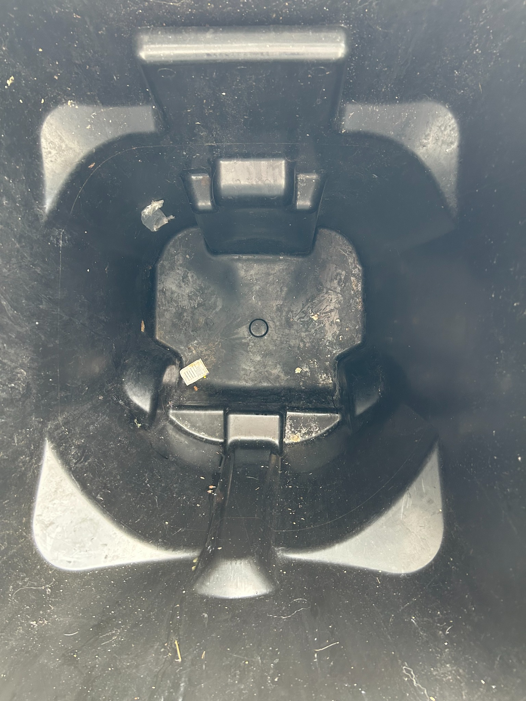
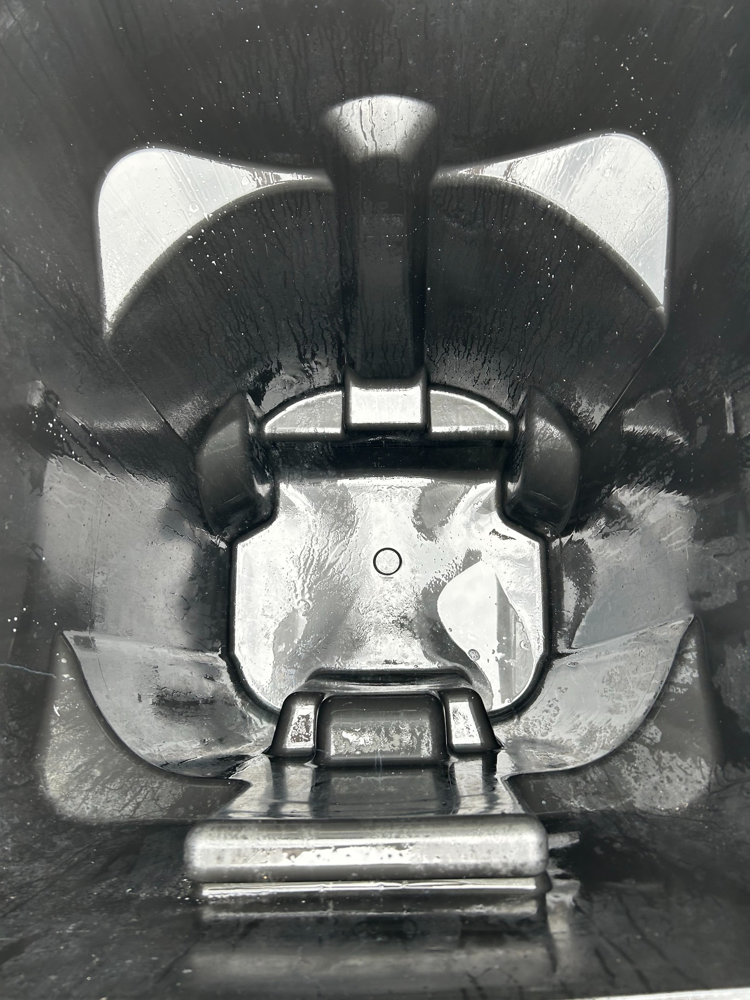

Before → after
The first photo is before cleaning. The next photo shows the cleaned result.

BEFORE
AFTER
We bring the clean to your neighborhood
Starting with Ashley Acres, Fox Creek and nearby Waukee neighborhoods.
Ready for a fresher bin?
Request a cleaning and we'll follow up to confirm your route.